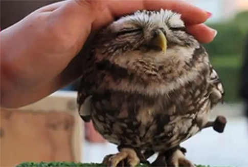
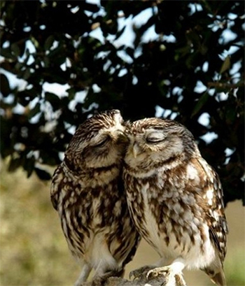

Owls...
Why do I like owls so much?


- they are adorable
- and lovely
- and cuddly


"A wise old owl sat on an oak; The more he saw the less he spoke;
The less he spoke the more he heard; Why aren't we like that wise old bird?"
- nursery rhyme
Owls:
Most birds of prey sport eyes on the sides of their heads,
but the stereoscopic nature of
the owl's forward-facing eyes permits the greater
sense of depth perception necessary for low-light hunting.
More information about owls...
